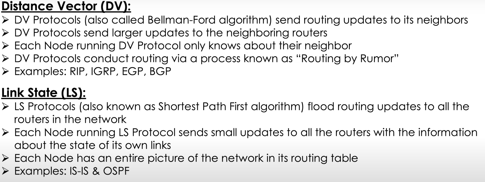

routing tables are updated about the quickest paths via routing protocols
routing protocols allow to share info between routers
routing protocols devide into 2 main categories - interior and exterior
interior are further split into 2 categories:
link state routing protocols and distance-vector protocols
Interior gateway protocols are used by routers to share information within a single autonomous system - a collection of networks that all fall under the control of a single network operator. (a large corp sending data between different offices)
distance-vector protocols - its technically an algorithem which dynamic routing protocols such as EIGRP and RIP use.
each router broadcast on a regular basis its whole routing table, the neighboring router ignores of a destination route if its less efficient (if its metric is higher
- metric is the number of hops). in this manner, routers know only the path with the lowest number of hops and not the whole network map.
but short distance doent necessary means its a short delivery
*** the router doesnt knows the whole path, only the next hop
link state - also an algorithm used by different protocols as OSPF- each router knows the whole net map
these are complicated algoritms and use alot of memory - not a problem in new age is it?
